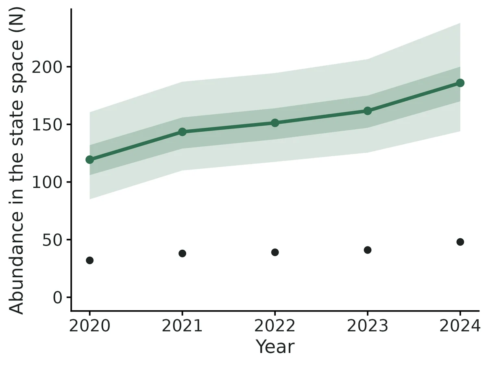
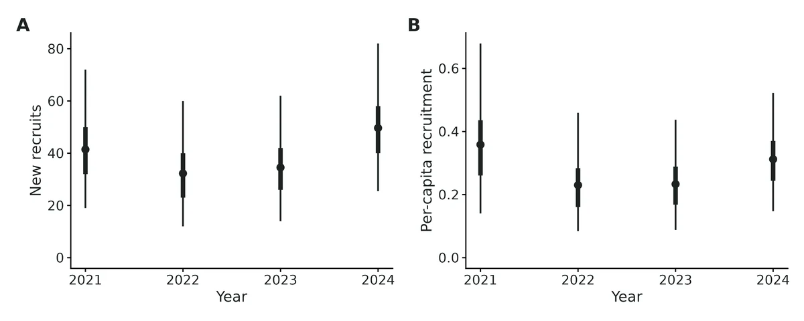
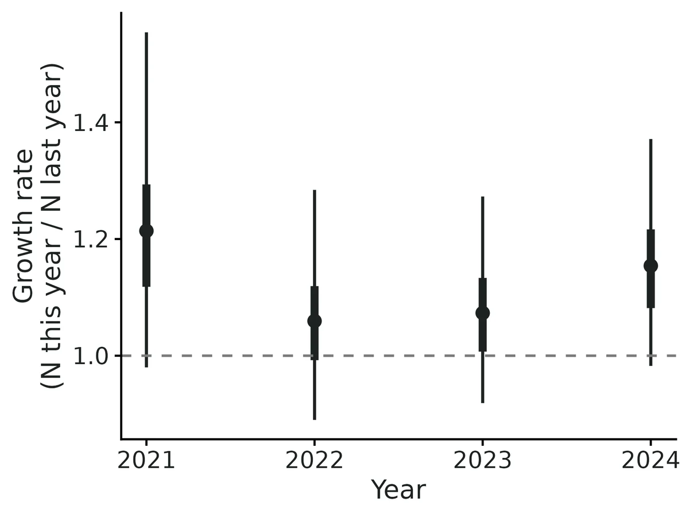
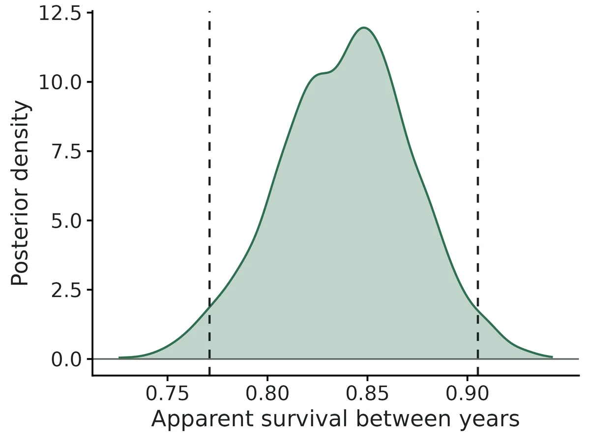

Open-population spatial capture-recapture (Jolly-Seber SCR)
How many animals are there each year, is the population growing or declining, how many survive from year to year and how many new animals arrive, and is density higher in some habitats? The module combines a Jolly-Seber model (animals enter, survive and die between primary periods) with spatial capture-recapture (where each animal was detected tells the model where it lives and how detectable it is). It estimates:
Is this the right analysis?
Use it when
Individually identified animals (hair-snare or scat DNA, camera traps of marked/spotted species, live traps) detected at fixed detectors over repeated occasions in each of several seasons or years (robust design); question is abundance/density in each year, trend, apparent survival, recruitment, or whether density is associated with habitat.
Not for
One closed season only (use scr); non-spatial capture histories without detector locations (use jolly-seber or cjs); survival of marked animals only, with no interest in abundance (cjs); animals whose ranges shift a lot between years (static activity centres assumed; see Pitfalls); unmarked animals (nmixture, occupancy, distance).
The data you need
Detector CSV (id, x, y, optional per-year operation columns); detection CSV (individual, year/period, occasion within period, detector); optional habitat grid CSV with density covariates.
What the example's main data file looks like:
| snare_id | utm_e | utm_n | elevation_m | ops_2020 | ops_2021 | ops_2022 | ops_2023 |
|---|---|---|---|---|---|---|---|
| HS01 | 574000 | 4864000 | 1351 | 11111 | 11111 | 11111 | 11111 |
| HS02 | 575000 | 4864000 | 1212 | 11111 | 11111 | 11111 | 11111 |
| HS03 | 576000 | 4864000 | 1232 | 11111 | 11111 | 11111 | 11111 |
| HS04 | 577000 | 4864000 | 1244 | 11111 | 11111 | 11111 | 11111 |
| HS05 | 578000 | 4864000 | 1221 | 11111 | 11111 | 11111 | 11111 |
Not sure? Use the finder to compare modules.
The worked example
Pacific marten abundance, survival, recruitment and canopy association from five years of DNA hair snares (open-population spatial capture-recapture, simulated data with known truth)
The question: How many Pacific martens live in the study area each summer (2020-2024), is the population declining, what are annual apparent survival and recruitment, and is marten density higher under denser canopy?
The data are simulated, so the true answer is known and the analysis can be checked against it.
What the researcher typed
I have five summers (2020-2024) of marten hair-snare data from 49 snares on a 1-km grid, each checked 5 times a summer. hair_snares.csv has the snare locations (UTM) and which checks each snare was working; marten_genotypes.csv has one row per genotyped sample with year, check, snare and marten ID; and habitat_grid.csv has canopy cover on a 400 m grid around the snares. I want to know how many martens there are each year, whether they are declining, annual survival and recruitment, and whether density is higher under denser canopy. Please give me a report with figures I can use in a paper.
Run it yourself
Download the example data below and unzip it.
Open the unzipped folder in Claude Code (see Install).
Paste the prompt above. The agent checks the files, writes a plan, runs planted truth, fits the model and writes the report. You can compare your results with the ones below.
Contains hair_snares.csv, marten_genotypes.csv, habitat_grid.csv, the settings file (config.yaml), a description of the data and a step-by-step walkthrough.
Study design details
| n detectors | 49 |
|---|---|
| detector layout | 7 x 7 grid, 1000 m spacing |
| n periods | 5 |
| years | 2020-2024 |
| n occasions | 5 |
| buffer m | 3000 |
| mask spacing m | 400 |
| n mask pixels | 900 |
| state space km2 | 144 |
| snare outages | 2/0/2/3/5 snares not working on every check in 2020-2024 |
| n individuals detected | 95 |
| detected per year | 32, 38, 39, 41, 48 |
| detected in 2plus years | 48 |
| n detections | 598 |
| density covariate | canopy_cover_pct |
| engine | nimble marginal (3 chains x 30000, burn-in 10000, thin 2) |
| data augmentation M | 570 |
Results from the example data

What this means
- Abundance in the 144 km² state space (traps plus buffer) was 119 (95% CrI 85.0 to 161) in period 2020 and 186 (95% CrI 144 to 238) in period 2024 (density 0.83 and 1.3 animals per km²).
- Over the study the population changed by a factor of 1.58 (95% CrI 1.15 to 2.16); posterior probability of a decline from the first to the last period: < 0.01.
- Apparent survival between consecutive periods was 0.84 (95% CrI 0.77 to 0.91): an animal alive in one period had an estimated 84% chance of still being alive and resident in the next. 'Apparent' because death and permanent emigration from the study area cannot be told apart.
- Per-capita recruitment rates (recruits per animal alive in the previous period) were 2021: 0.36 (95% CrI 0.14 to 0.68); 2022: 0.23 (95% CrI 0.085 to 0.46); 2023: 0.23 (95% CrI 0.088 to 0.44); 2024: 0.31 (95% CrI 0.15 to 0.52).
- In total 277 (95% CrI 222 to 341) different animals were alive in the state space at some point during the study (superpopulation), of whom 95 (34%) were ever detected.
- A trap at an animal's activity centre detects it on a given occasion with probability 0.32 (95% CrI 0.28 to 0.35); the spatial scale sigma was 803 (95% CrI 764 to 846) m, so 95% of activity falls within 1966 m of the centre.
- Each 1 SD (12) higher Canopy cover (%) is associated with 273% higher density (rate ratio 3.7, 95% CrI 2.9 to 5.0). This describes where animals' activity centres are, not proof that Canopy cover (%) causes higher density.
- WARNING: the traps sample habitat of unrepresentative density (state-space average 1.94 x the trapped area), so total abundance rests on extrapolating the density covariate effect to habitat the traps did not cover.
More figures



Figures are the module's default publication figures, reduced for the web. The report also saves them as PDF and full-resolution PNG.
Planted truth at the example's design
Before trusting the example's results, the module was run on many simulated data sets with the same design and known true values. Each row is one quantity: did the method get it back? (What the thresholds are.)
Every quantity checked passed planted truth at this design.
| This example | 49 hair snares (7 x 7 grid, 1,000 m apart), 5 years x 5 occasions, 95 martens detected |
|---|---|
| Design the module was validated at | 49 snares (7 x 7 grid, 1,000 m = 1.25 sigma apart), 5 periods x 5 occasions, about 132 animals detected on average |
The example uses the module's default layout and parameters (7 x 7 snares 1,000 m apart, 5 years x 5 occasions). With the corrected entry prior, that design passed all 28 estimands, with abundance +0.6 to +1.6% and coverage 0.91-0.98. The snares happen to sit in low canopy, so 95 animals were detected against about 132 on average. VALIDATION.md found biased means only at about 40 detected animals: abundance 4-8% high and per-capita recruitment 12-20% high. Total abundance here depends on extrapolating the canopy effect to unsampled forest.
28 of 28 rows pass.
Show the full recovery table (28 rows)
| Quantity | True value | Average estimate | Bias | Allowed bias | Coverage (needed) | Result |
|---|---|---|---|---|---|---|
| abundance_period_1 | 114.4 | 115.3 | +0.8% | ±10.0% | 0.98 (0.885) | ✓ PASS |
| abundance_period_2 | 118.6 | 120.1 | +1.3% | ±10.0% | 0.95 (0.885) | ✓ PASS |
| abundance_period_3 | 124.5 | 125.5 | +0.8% | ±10.0% | 0.91 (0.885) | ✓ PASS |
| abundance_period_4 | 131.2 | 132.6 | +1.0% | ±10.0% | 0.95 (0.885) | ✓ PASS |
| abundance_period_5 | 139 | 140.9 | +1.4% | ±10.0% | 0.98 (0.885) | ✓ PASS |
| baseline_detection | 0.3 | 0.301 | +0.2% | ±10.0% | 0.91 (0.885) | ✓ PASS |
| density_beta_canopy | 1 | 1.01 | +1.0% | ±10.0% | 0.98 (0.885) | ✓ PASS |
| density_per_km2_period_1 | 0.794 | 0.801 | +0.8% | ±10.0% | 0.97 (0.885) | ✓ PASS |
| density_per_km2_period_2 | 0.824 | 0.834 | +1.3% | ±10.0% | 0.94 (0.885) | ✓ PASS |
| density_per_km2_period_3 | 0.865 | 0.872 | +0.8% | ±10.0% | 0.91 (0.885) | ✓ PASS |
| density_per_km2_period_4 | 0.911 | 0.921 | +1.0% | ±10.0% | 0.95 (0.885) | ✓ PASS |
| density_per_km2_period_5 | 0.965 | 0.978 | +1.4% | ±10.0% | 0.98 (0.885) | ✓ PASS |
| growth_rate_period_2 | 1.04 | 1.05 | +1.3% | ±10.0% | 0.94 (0.885) | ✓ PASS |
| growth_rate_period_3 | 1.05 | 1.05 | -0.0% | ±10.0% | 0.98 (0.885) | ✓ PASS |
| growth_rate_period_4 | 1.05 | 1.06 | +0.6% | ±10.0% | 0.96 (0.885) | ✓ PASS |
| growth_rate_period_5 | 1.06 | 1.07 | +0.7% | ±10.0% | 0.98 (0.885) | ✓ PASS |
| home_range_area_95 | 12 | 12.1 | +0.2% | ±10.0% | 0.96 (0.885) | ✓ PASS |
| per_capita_recruitment_period_2 | 0.24 | 0.253 | +5.2% | ±10.0% | 0.96 (0.885) | ✓ PASS |
| per_capita_recruitment_period_3 | 0.256 | 0.253 | -1.3% | ±10.0% | 0.99 (0.885) | ✓ PASS |
| per_capita_recruitment_period_4 | 0.25 | 0.26 | +4.2% | ±10.0% | 0.93 (0.885) | ✓ PASS |
| per_capita_recruitment_period_5 | 0.252 | 0.264 | +4.5% | ±10.0% | 0.97 (0.885) | ✓ PASS |
| recruits_period_2 | 27.5 | 28.2 | +2.8% | ±10.0% | 0.95 (0.885) | ✓ PASS |
| recruits_period_3 | 30.4 | 29.8 | -1.9% | ±10.0% | 0.96 (0.885) | ✓ PASS |
| recruits_period_4 | 31 | 32 | +2.9% | ±10.0% | 0.94 (0.885) | ✓ PASS |
| recruits_period_5 | 33.2 | 34.2 | +3.2% | ±10.0% | 0.98 (0.885) | ✓ PASS |
| sigma | 800 | 800.5 | +0.1% | ±10.0% | 0.96 (0.885) | ✓ PASS |
| superpopulation_size | 236.5 | 239.5 | +1.3% | ±10.0% | 0.93 (0.885) | ✓ PASS |
| survival | 0.8 | 0.798 | -0.3% | ±10.0% | 0.98 (0.885) | ✓ PASS |
Limits that matter
- Snares sample below-average canopy: 72% of martens are estimated to live > 2 sigma from any snare and state-space density is 1.94 x trapped-area density, so total abundance rests on extrapolating the canopy effect; a homogeneous-density fit (openCR) gives ~1.7-1.9x lower abundance.
- In this realisation the canopy-effect interval (1.06-1.61) misses the simulation value 1.0 (true-centre oracle 1.18); the 100-replicate recovery shows no bias at this design (+1.0%, coverage 0.98).
- Static activity centres: range shifts between years bias survival low.
- Constant survival, p0 and sigma; sex/age differences, trap response and time-varying detection are not modelled (PPCs flag but were not validated against such violations).
- Apparent survival: death and permanent emigration are confounded; recruitment includes immigration.
- First-year recruitment is not identifiable; last-interval survival/recruitment are less precise; equal intervals between years assumed.
- With ~40 detected animals abundance is 4-8% high and per-capita recruitment 12-20% high; this design (95 animals) recovers within ~5%.
- Recovery validated with Nimble marginal only; NumPyro agrees on this dataset.
All known limits from the module's validation record
- Sample size (updated with the new entry prior; see "Independent verification"). With ~20 animals per period (~40 over the study), abundance and the superpopulation posterior means are 4-8% high, recruits 10-13% and per-capita recruitment 12-20% high. Intervals still cover. (With the original prior this was 15-24%, section 4.) The report warns below 10 animals per period and below 10 between-period recaptures.
- Posterior mean of abundance is within 2% at the default design with the new prior. On the verifier's ~90-animal design it is 6-9% high and the density effect 9.5% too far from zero; intervals are calibrated (coverage 0.91-0.99).
- Unrepresentative trap placement. If traps cover habitat with a density unlike the state-space average, total abundance rests on the covariate model's extrapolation (section 8). The report warns when the implied extrapolation factor is > 1.5 or < 1/1.5.
- Static activity centres, constant phi, p0, sigma. Range shifts between years, sex/age differences, trap response and time-varying detection are not modelled. The posterior predictive checks (per-period detected counts, detected in 2+ periods, missed periods within histories, traps per individual-period) are there to flag them, but they were not validated against such violations here.
- Equal intervals between periods are assumed. A skipped year makes survival across the gap phi, not phi^2.
- Period-1 recruitment is not identifiable, and last-interval survival/recruitment are less precise.
- entry_prob_period_t (gamma_t) depends on M and is not a biological rate. Interpret recruits and per-capita recruitment.
- Speed. Nimble marginal ~11 min per fit at the default design (real-data settings). The hmm and latent approaches are 3.5-6x slower, and NumPyro on CPU is ~6.6x slower (75 min), but on one A10 GPU (
bin/ejob -g,numpyro_gpu: true) it takes 346 s, about half the Nimble time, with identical estimates (section 6a). Recovery was validated with Nimble marginal only; the other engines are validated by the single-dataset cross-check (section 6a). - openCR cross-check uses a hazard half-normal detection function, so p0 and sigma are not on exactly the same scale. Its derived N_t is a point estimate (no interval shown).
How this module was validated
- 100 simulated datasets per design, fitted with Nimble marginal (3 chains x 10,000 iterations, 4,000 burn-in, thin 2). To pass, bias had to be within 10% (or 3 Monte Carlo SE), coverage (how often the 95% interval contained the truth) at least about 0.885, and at least 90% of fits had to converge.
- Default design: all 28 estimands passed. The harder design (about 39 animals detected, 3 periods) passed all 18 after the prior fix; under the original prior it passed only 9 of 18.
- The independent verifier found that the original entry prior pushed abundance up (+16 to +20%) and replaced it. On the verifier's own design (about 88 animals, continuous activity centres, a lake) results went from 10/23 to 23/23 passing.
- Negative control: a state space that was too small failed 27 of 27 estimands (density +44 to +51%, coverage 0.00). The verifier's own version passed only 1 of 23.
- False-positive rate for the habitat effect with no true effect: 0.02 on the builder's design and 0.04 on the verifier's design.
- Cross-checks: four Bayesian implementations (Nimble marginal, hmm and latent, plus NumPyro) agreed within MCMC error. openCR maximum likelihood, fitted with homogeneous density, agreed on yearly abundance within 1-4 animals.
- Power to detect a 0.35-per-SD habitat effect rose from 0.84 with 3 periods to 0.96 with 5.
Every run uses the acceptance gate described on the validation page. The full record follows, section by section, exactly as kept in the module's VALIDATION.md.
Settings and pass/fail rule used for every run
> Read "Independent verification" (end of this file) first. Sections 1-8 are the builder's runs with the > original entry prior (independent Uniform(0,1) on each gamma_t). The verifier showed that prior biases > abundance upward when data are weak and replaced it with the superpopulation (psi + Dirichlet) prior on > 2026-10-20. Sections 1, 3, 4, 5, 7 and 8 were re-run with the new prior; the current numbers are in the > verification section, and they supersede the tables below wherever they differ.
All recovery runs used bin/Rscript core/run.R recover scr-open --config dev/scr-open/cfg/<cfg>.yaml --nsim N --cores 16 on njobvu (SLURM, 16 cores), with the module's fast_settings: Nimble marginal, block random walk, 3 chains x 10,000 iterations, 4,000 burn-in, thin 2, and N_t / recruits drawn by FFBS on 200 draws per chain. Raw results are in results/scr-open/recover_<label>/ (summary CSV, per-replicate CSV, HTML report). Gate (core/R/recovery.R::recovery_gate, thresholds unchanged): |bias| <= max(10% of truth, 3 MC SE); 95% interval coverage >= 0.95 - 3 MC SE (floor 0.80); max R-hat < 1.05 in >= 90% of all replicates.
Default design (module defaults): 7 x 7 proximity detectors (hair snares) 1,000 m apart (1.25 sigma), 5 primary periods x 5 occasions, 5% chance per detector and period of failing from a random occasion on; state space = detectors + 3,000 m buffer (3.75 sigma), 400 m pixels (900); density 0.8 / km2 in period 1 (~115 animals), sigma = 800 m, p0 = 0.3, apparent survival 0.8, per-capita recruitment 0.25 (Poisson), log-density effect of a smooth canopy field 1.0 per SD. Per dataset, on average (30 simulated datasets): 132 individuals detected, 61 per period, 79 seen in two or more periods, 1,167 detections. Superpopulation ~236.
Timing: ~8.5 min per replicate (median; max 13 min) including the ~60-100 s Nimble compile. A 100-replicate run takes ~1 h on 16 cores.
1. Recovery at the default design: PASS
All 28 estimands pass (coverage bound 0.885). Max R-hat < 1.05 in 100/100 replicates (< 1.01 in 38/100 at the short recovery settings; the real-data defaults run 3x longer). 0 failures.
| estimand | truth | mean est | rel. bias | bias MC SE | RMSE | coverage | CI width | power |
|---|---|---|---|---|---|---|---|---|
| abundance_period_1 | 114 | 119 | +3.6% | 1.2 | 13.1 | 0.94 | 45.9 | |
| abundance_period_2 | 119 | 123 | +4.1% | 1.1 | 12.0 | 0.96 | 43.6 | |
| abundance_period_3 | 124 | 129 | +3.6% | 1.3 | 13.6 | 0.92 | 44.4 | |
| abundance_period_4 | 131 | 136 | +3.7% | 1.4 | 14.7 | 0.93 | 46.8 | |
| abundance_period_5 | 139 | 144 | +4.2% | 1.5 | 15.9 | 0.97 | 50.8 | |
| density_per_km2_period_1 | 0.794 | 0.824 | +3.6% | 0.0086 | 0.091 | 0.93 | 0.319 | |
| density_per_km2_period_5 | 0.965 | 1.00 | +4.2% | 0.010 | 0.110 | 0.96 | 0.353 | |
| superpopulation_size | 236 | 247 | +4.4% | 2.1 | 23.1 | 0.89 | 68.7 | |
| recruits_period_2 | 27.5 | 29.1 | +6.3% | 0.70 | 7.12 | 0.94 | 27.8 | |
| recruits_period_3 | 30.4 | 30.7 | +2.1% | 0.71 | 7.12 | 0.97 | 26.8 | |
| recruits_period_4 | 31.0 | 32.8 | +5.8% | 0.75 | 7.66 | 0.95 | 27.4 | |
| recruits_period_5 | 33.2 | 35.3 | +7.1% | 0.80 | 8.25 | 0.97 | 29.0 | |
| per_capita_recruitment_period_2 | 0.240 | 0.254 | +5.7% | 0.0074 | 0.075 | 0.96 | 0.273 | |
| per_capita_recruitment_period_3 | 0.256 | 0.253 | -0.5% | 0.0061 | 0.060 | 0.98 | 0.245 | |
| per_capita_recruitment_period_4 | 0.250 | 0.260 | +4.2% | 0.0066 | 0.066 | 0.94 | 0.238 | |
| per_capita_recruitment_period_5 | 0.252 | 0.265 | +5.2% | 0.0064 | 0.065 | 0.97 | 0.239 | |
| growth_rate_period_2 | 1.04 | 1.05 | +1.2% | 0.0082 | 0.083 | 0.95 | 0.296 | |
| growth_rate_period_3 | 1.05 | 1.05 | -0.1% | 0.0066 | 0.066 | 0.97 | 0.268 | |
| growth_rate_period_4 | 1.05 | 1.06 | +0.6% | 0.0070 | 0.070 | 0.97 | 0.262 | |
| growth_rate_period_5 | 1.06 | 1.07 | +0.8% | 0.0062 | 0.063 | 0.98 | 0.263 | |
| survival | 0.800 | 0.796 | -0.5% | 0.0027 | 0.027 | 0.96 | 0.110 | |
| baseline_detection | 0.300 | 0.301 | +0.3% | 0.0014 | 0.013 | 0.93 | 0.048 | |
| sigma (m) | 800 | 799 | -0.1% | 1.5 | 15.1 | 0.95 | 57.4 | |
| home_range_area_95 (km2) | 12.0 | 12.0 | -0.1% | 0.046 | 0.456 | 0.95 | 1.73 | |
| density_beta_canopy | 1.00 | 1.03 | +2.5% | 0.012 | 0.126 | 0.96 | 0.468 | 1.00 |
(density_per_km2 periods 2-4 behave like periods 1 and 5: +3.6 to +4.1%, coverage 0.91-0.94.)
Abundance, density, recruits and the superpopulation are biased upward by +4% (about 3 MC SE). That is inside the 10% tolerance. It is the usual small-sample bias of the posterior mean of a right-skewed abundance posterior under data augmentation (the closed scr module shows +4.6% at its default design). Survival, p0, sigma and the covariate effect are unbiased to within 2.5%.
2. The open-population covariate effect "biased low" (beta1 ~0.7 vs 1.0): investigated, not a bias
The parent SCR benchmark (../CLAUDE.md) found beta1 ~0.69-0.74 (true 1.0, posterior SD ~0.09) on BOTH platforms for open_cov_small. Three possible explanations were tested.
- Small-sample bias? No. Over 100 datasets at the same design, the posterior mean is 1.025 (median 1.014; SD across datasets 0.124), and 95% intervals cover the truth in 96/100. Only 5/100 posterior means are below 0.85. In the harder design (section 4, ~39 animals detected) it is 1.05 with coverage 0.96.
- Simulator/likelihood mismatch? No. An "oracle" estimate uses the true activity-centre pixels of every animal (detected or not) in the same pixel-choice likelihood exp(beta x_g) / sum_h exp(beta x_h). Over 200 simulated datasets (
dev/scr-open/oracle_beta.R,oracle_beta.csv) it gives mean 1.001, SD 0.072 (mean SE 0.076). The simulator generates exactly what the model assumes, and the posterior tracks the oracle (correlation 0.68; mean posterior - oracle +0.021, SD 0.092). - Identifiability? No. The effect is estimated in every replicate (100/100 intervals exclude 0), and the false-positive rate with beta = 0 is 0.02 (section 3).
What happened in the benchmark dataset. Refitting ../data/open_cov_small.json with this module (Nimble marginal, M = 600) reproduces beta1 = 0.733 (95% CrI 0.57-0.91; R-hat 1.003, ESS 800). The oracle from that dataset's true centres is 0.847 (SE 0.071): the 262 animals that happened to be realised sit on lower canopy than expected, 2.1 SE below 1.0. The remaining -0.11 is ordinary estimation noise (1.2 SD of the posterior-minus-oracle spread above). So it was one unlucky realisation, about a 1-in-50 draw for the centres, which both platforms correctly reproduced. The same model recovers beta1 without bias.
A side result shows why the model is needed. Fitting the covariate to detected animals' true centres only gives mean 0.879 (SD 0.295), because detection selects animals near the traps. The SCR likelihood corrects this by integrating over undetected animals.
3. False-positive rate: PASS
| estimand | truth | mean est | coverage | share of 95% CrIs excluding 0 |
|---|---|---|---|---|
| density_beta_canopy | 0 | -0.003 (SD 0.091) | 0.98 | 0.02 |
All 28 estimands pass. Abundance bias is +0.9 to +3.1%, coverage 0.93-0.98. Survival -0.3%, sigma +0.3%. R-hat < 1.05 in 100/100.
4. Harder design: coverage holds, abundance biased up 15-24% (gate FAIL on 9/18)
Density 0.4 / km2, p0 = 0.15, survival 0.6, 3 periods (other settings default). Per dataset: ~39 individuals detected, ~20 per period, ~15 seen in more than one period, ~136 detections. R-hat < 1.05 in 100/100. 0 failures.
| estimand | truth | mean est | rel. bias | coverage | pass |
|---|---|---|---|---|---|
| abundance_period_1 | 57.5 | 65.6 | +14.7% | 0.92 | no |
| abundance_period_2 | 48.3 | 55.5 | +15.6% | 0.93 | no |
| abundance_period_3 | 40.7 | 47.9 | +17.9% | 0.94 | no |
| density_per_km2_period_1-3 | 0.40 / 0.34 / 0.28 | +14.7 / +15.6 / +17.9% | 0.91-0.94 | no | |
| superpopulation_size | 83.4 | 96.5 | +16.0% | 0.91 | no |
| recruits_period_2 / 3 | 14.1 / 11.9 | 16.6 / 14.3 | +22.2 / +23.7% | 0.97 / 0.99 | no |
| per_capita_recruitment_period_2 / 3 | 0.246 | 0.284 / 0.269 | +20.2 / +13.0% | 0.95 / 0.98 | yes (3 MC SE) |
| growth_rate_period_2 / 3 | 0.843 / 0.846 | 0.884 / 0.867 | +5.2 / +2.9% | 0.91 / 0.99 | yes |
| survival | 0.60 | 0.596 | -0.7% | 0.96 | yes |
| baseline_detection | 0.15 | 0.153 | +1.7% | 0.91 | yes |
| sigma (m) | 800 | 799 | -0.1% | 0.96 | yes |
| density_beta_canopy | 1.0 | 1.05 | +5.1% | 0.96 | yes |
With ~20 animals per period the abundance posteriors are strongly right-skewed. Their means sit 15-24% above the truth, but the 95% intervals still cover at the nominal rate. Survival, detection and the density effect remain unbiased. This is the module's sample-size limit (see Known limits).
5. Negative control: state space too small: gate FAILS as it must
Data are simulated with the default 3,000 m buffer (homogeneous density), but the model's state space is trimmed to 800 m (1 sigma) beyond the detectors. Animals living outside it are still detected. 0/27 estimands pass.
| estimand | truth | mean est | rel. bias | coverage |
|---|---|---|---|---|
| density_per_km2_period_1 | 0.792 | 1.14 | +43.9% | 0.00 |
| density_per_km2_period_5 | 0.971 | 1.44 | +48.2% | 0.00 |
| superpopulation_size (full area) | 237 | 144 | -39% | 0.00 |
| survival | 0.80 | 0.76 | -5.0% | 0.68 |
| baseline_detection | 0.30 | 0.275 | -8.5% | 0.28 |
| per_capita_recruitment_period_2 | 0.245 | 0.318 | +29.9% | 0.52 |
The gate catches a mis-specified state space. Density is inflated by ~45-50%, and survival/recruitment are distorted because animals at the edge drift in and out of the small state space. The report warns whenever the buffer is < 3 sigma.
6. Cross-check of engines on one dataset
6a. Four Bayesian implementations (default design, seed 11; dev/scr-open/xcheck.R)
Same data, same model (canopy covariate fitted), real-data settings. Truth: N_t = 106, 110, 117, 120, 126; Nsuper 227; survival 0.80; p0 0.30; sigma 800 m; beta 1.0.
| estimand | Nimble marginal | Nimble hmm (s sampled) | Nimble latent (z, s sampled) | NumPyro marginal (NUTS, CPU) |
|---|---|---|---|---|
| abundance 1 | 120 (97-146) | 118 (94-145) | 119 (97-148) | 119 (98-148) |
| abundance 3 | 132 (110-155) | 131 (110-155) | 132 (111-156) | 131 (110-155) |
| abundance 5 | 154 (127-185) | 153 (127-183) | 155 (128-182) | 154 (126-184) |
| superpopulation | 270 (235-314) | 268 (233-309) | 270 (236-311) | 269 (234-310) |
| survival | 0.782 (0.728-0.835) | 0.784 (0.722-0.840) | 0.782 (0.722-0.837) | 0.781 (0.724-0.839) |
| per-capita recr. 2 | 0.296 (0.145-0.495) | 0.302 (0.152-0.510) | 0.297 (0.144-0.498) | 0.296 (0.146-0.473) |
| baseline_detection | 0.318 (0.292-0.345) | 0.319 (0.292-0.344) | 0.318 (0.292-0.343) | 0.319 (0.293-0.344) |
| sigma (m) | 794 (765-823) | 794 (764-823) | 795 (766-825) | 794 (764-825) |
| density_beta_canopy | 1.13 (0.95-1.30) | 1.12 (0.92-1.30) | 1.12 (0.95-1.30) | 1.12 (0.94-1.29) |
| wall time | 674 s | 2,370 s | 3,966 s | 4,468 s (CPU); 346 s (A10 GPU) |
| max R-hat | 1.006 | 1.015 | 1.009 | 1.004 (CPU); 1.008 (GPU) |
The four implementations agree to within MCMC error, and three of them share no likelihood code. The latent version samples z and s explicitly in plain BUGS. The hmm version uses a separate forward-algorithm distribution with sampled centres. NumPyro is written in JAX; its GPU run gave N_1 119 (97-148), N_5 154 (128-186), survival 0.781, beta 1.12, which match the CPU run. On this particular dataset the abundance in periods 2-5 and the superpopulation lie above the truth (e.g. period 4: truth 120, CrI 129-183) in all engines. That is a property of the realisation, not of one implementation. Across 100 replicates the coverage is 0.92-0.97 (section 1).
6b. Independent maximum-likelihood route: openCR (Efford & Schofield 2020)
openCR JSSAsecrf (spatial Jolly-Seber, per-capita recruitment f, hazard half-normal detection) on the identical mask, capture histories and detector usage.
openCR could not take the canopy mask covariate on superD here (superD ~ cv failed: "covariate(s) cv not found"). The like-for-like comparison is therefore with homogeneous density in both engines: the same seed-11 dataset, module run with density_covariates: [] (dev/scr-open/xcheck2.R, xcheck2_seed11.csv).
| estimand | truth | Nimble marginal (homog.) | openCR JSSAsecrf ML (homog.) |
|---|---|---|---|
| abundance 1 | 106 | 106 (87-128) | 105 |
| abundance 2 | 110 | 116 (99-136) | 113 |
| abundance 3 | 117 | 119 (102-138) | 113 |
| abundance 4 | 120 | 137 (117-157) | 133 |
| abundance 5 | 126 | 136 (115-159) | 136 |
| superpopulation | 227 | 238 (214-268) | 235 (superD x area) |
| survival | 0.80 | 0.783 (0.726-0.836) | 0.788 (0.725-0.839) |
| per-capita recruitment 2 | 0.236 | 0.299 (0.146-0.478) | 0.289 (0.142-0.590) |
| per-capita recruitment 3 | 0.227 | 0.220 (0.124-0.347) | 0.215 (0.109-0.426) |
| per-capita recruitment 4 | 0.299 | 0.373 (0.254-0.525) | 0.386 (0.234-0.637) |
| per-capita recruitment 5 | 0.300 | 0.237 (0.142-0.362) | 0.234 (0.128-0.430) |
| sigma (m) | 800 | 795 (769-825) | 779 (750-809) (HHN scale) |
| wall time | 893 s | 1,551 s |
The Bayesian and ML routes agree. N_t differs by 0-6 animals (Bayesian slightly higher: posterior mean vs MLE), and survival, recruitment and the superpopulation agree to within 2-4%. sigma differs by 2% because openCR's hazard half-normal has a slightly different shape. Note: an earlier comparison with openCR homogeneous vs the Bayesian covariate model showed openCR ~13% lower on this dataset. That gap is the density model, not the engine. On this dataset the fitted canopy effect (1.12) implies higher density in unsampled habitat, so covariate-model abundance is 120-154 vs 106-137 homogeneous. The report's engine comparison labels openCR "homogeneous density" and the caption explains the difference whenever density covariates are fitted.
7. Power: detecting a weaker habitat effect vs number of years
Log-density effect 0.35 per SD (rate ratio 1.42 per SD), default design otherwise; n_periods = 3, 4, 5.
| n_periods | mean est (truth 0.35) | coverage | 95% CrI width | power (CrI excludes 0) | survival CrI width | survival coverage | N_1 coverage | Nsuper coverage |
|---|---|---|---|---|---|---|---|---|
| 3 | 0.376 | 0.92 | 0.471 | 0.84 | 0.159 | 0.96 | 0.98 | 0.94 |
| 4 | 0.349 | 0.92 | 0.421 | 0.88 | 0.123 | 0.96 | 0.98 | 0.94 |
| 5 | 0.347 | 0.96 | 0.406 | 0.96 | 0.107 | 0.94 | 0.98 | 0.88 |
Each extra year adds new animals whose centres inform the density map, so power for a moderate habitat effect rises from 0.84 to 0.96. The interval width for survival falls by a third from 3 to 5 years. (Nsuper coverage 0.88 at T = 5 with nsim = 50 is within binomial noise of 0.95: bound 0.858.)
8. Example: marten hair-snare survey
Simulated with the module's simulator (seed 2025) and written in field-crew format (UTM coordinates, years, check numbers, 0/1 operation strings, extra columns; dev/scr-open/make_example.R). 95 martens detected, 32-48 per year, 48 in two or more years. Nimble marginal, real-data settings: max R-hat 1.003, min ESS 1,078, all posterior predictive p-values 0.34-0.70.
| estimand | truth | estimate (95% CrI) |
|---|---|---|
| abundance 2020 / 2024 | 127 / 158 | 130 (94-175) / 199 (150-258) |
| superpopulation | 262 | 300 (236-373) |
| survival | 0.80 | 0.835 (0.761-0.901) |
| baseline_detection | 0.30 | 0.317 (0.282-0.356) |
| sigma (m) | 800 | 798 (759-845) |
| density_beta_canopy | 1.0 | 1.38 (1.09-1.68) |
The covariate interval misses the truth here. This is not a model failure. The true-centre oracle for this dataset is 1.18 (SE 0.08), so the realised animals favour canopy more strongly than 1.0. The snare grid also sits in low-canopy forest (-0.47 SD below the state-space mean within 2 sigma of snares, -0.79 SD inside the grid). So the canopy effect, and with it the total abundance, is largely an extrapolation to unsampled dense forest. The fitted model puts 74% of animals more than 2 sigma from any snare, and state-space-average density is 2.06 x the density around the snares. The report now warns about this automatically (design notes, "habitat sampled by the traps"). In the engine comparison, openCR fitted with homogeneous density gives N ~70-107 (vs 130-199), about 1.7-1.9x lower, as that warning predicts. This makes the example a realistic lesson: when traps sample unrepresentative habitat, total abundance depends on the covariate model.
Independent verification (2026-10-20)
A separate verifier agent re-checked every claim above, using its own code (dev/scr-open/verify/, verify2/, verify3/), and it fixed one real problem. Gate: core/R/recovery.R::recovery_gate with unchanged thresholds. All recovery runs used SLURM on njobvu (16 cores) and the module's fast_settings (Nimble marginal).
What was found and changed
- Entry prior biased abundance upward (fixed). With independent Uniform(0,1) priors on gamma_1..T, the implied prior on the share of the M augmented rows ever alive, 1 - prod(1 - gamma_t), has median 0.97 at T = 4. Over -log prod ~ Gamma(T, 1) the prior strongly favours a superpopulation near M, so posterior abundance is pulled up whenever the data are weak. On the verifier's independent design (below) this gave abundance +16 to +20%, superpopulation +19% (coverage 0.86), recruits +19%, and a density effect of -0.86 against a truth of -0.70 (-23%, coverage 0.84). That is 10/23 estimands passing. Two diagnostic runs (
verify2/d_pixel,d_nolake, nsim = 32) showed the cause was neither the continuous-vs-pixel centres nor the irregular (lake) mask. An ML fit of the same likelihood (verify2/ml.R) was unbiased for Nsuper (+4.6%), so the likelihood was correct and the prior was to blame. Fix: all three Bayesian engines now use the superpopulation parameterisation of Kery & Schaub (2012, sec. 10.3.3) / Schwarz & Arnason (1996). psi ~ U(0,1) is the share of rows ever alive (so Nsuper is uniform on 0..M), and entry probabilities b ~ Dirichlet(1,..,1) are built by stick-breaking, v_t ~ Beta(1, T - t). The likelihood still uses gamma_1 = psi b_1 and gamma_t = psi b_t / (1 - psi sum_{k<t} b_k), the exact conditional entry hazard once w_i ~ Bern(psi) is marginalised. Files:R/nimble_engines.R(marginal: logit scale, customdlogitbeta; hmm/latent:dunif/dbeta),R/other_engines.R,python/scro_numpyro.py. The originals are indev/scr-open/verify2/*.orig. Thedlogitbetalog-density log a - log(1+e^-x) - a log(1+e^x) was checked analytically. - Report wording/figures (fixed). The Methods prior sentence was updated. "posterior probability of a decline: 0.00" now reads "< 0.01". In
engine_comparisonthe x tick labels of neighbouring panels collided (e.g. "2500.75"); the long engine labels are now wrapped. Thesurvivalpanel clipped its last tick label. Both now use edge-free breaks (so_inner_breaks). Growth-rate axis label wrapped, posterior facet labels wrapped.
Literature check
The model in R/nimble_engines.R was checked line by line against Gardner et al. (2010; static centres, z[i,t] ~ Bern(phi z[i,t-1] + gamma_t A[i,t])), Kery & Schaub (2012 ch. 10; restricted dynamic occupancy vs superpopulation forms), Royle et al. (2014 ch. 16) and the openCR documentation (Efford 2024: JSSAsecrf, per-capita recruitment f_t = B_t / N_{t-1}, hazard half-normal HHN). Detection is Binomial(K_jt, p0 exp(-d^2/2sigma^2)) for proximity detectors. The pixel point process is P(s in g) ∝ exp(beta x_g) with x standardised over the habitat mask, and home_range_area_95 = pi (2.448 sigma)^2. All of these match. The module simulator (R/simulate.R) generates exactly that process (Poisson founders, Bernoulli survival, Poisson(f N_{t-1}) recruits, pixel-then-uniform centres, per-occasion Bernoulli detections with outages). It shares no code with fit(). Exactness checks:
dOSCRmargequals a brute-force R likelihood to 1.1e-11 on a 102-animal dataset (verify/llbrute.R).- FFBS draws of N_t and B_t match the exact forward-backward expectations within MC error (
verify/ffbs_check.R).
Independent planted truth (verifier's own simulator verify/vsim.R, nsim = 100)
The design differs from the builder's on purpose:
- Schwarz-Arnason population process (Nsuper ~ Poisson(260), entry b = 0.45/0.2/0.15/0.2), not Poisson recruitment.
- Survival 0.7, p0 0.2, sigma 450 m, K = 4, T = 4 (years 2015-2018).
- Jittered 6 x 8 detector grid at 500 m (1.1 sigma); 2,000 m buffer; 250 m pixels.
- A circular lake of non-habitat.
- Continuous activity centres drawn from exp(beta X(s)) on a continuous surface, so the pixel approximation is tested.
- Covariate supplied on a raw scale (elevation, m) with beta = -0.7 per SD.
- Whole-period and last-occasion detector outages, unsorted capture rows and arbitrary ID labels.
Per dataset: ~88 animals detected, 39 per period, 41 in 2+ periods, 412 detections; Nsuper ~256. R-hat < 1.05 in 100/100 replicates in every run below; 0 failed fits; median 4.4 min per fit.
| estimand | truth | old prior: mean (rel. bias, cov.) | new prior: mean (rel. bias, cov.) |
|---|---|---|---|
| abundance 2015 / 2018 | 118 / 145 | 142 (+20.4%, 0.87) / 168 (+15.6%, 0.93) | 128 (+8.6%, 0.95) / 153 (+5.7%, 0.97) |
| superpopulation | 261 | 311 (+19.3%, 0.86) | 282 (+8.1%, 0.95) |
| recruits 2016-2018 | 52 / 38 / 52 | +18.6 to +19.8% | +7.5 / +8.9 / +8.4% (0.95-0.98) |
| per-capita recruitment 2016-2018 | 0.45 / 0.29 / 0.40 | +4.5 to +6.0% | +4.8 / +6.4 / +6.3% (0.92-0.97) |
| survival | 0.70 | 0.680 (-2.8%) | 0.683 (-2.4%, 0.94) |
| baseline_detection | 0.20 | 0.202 | 0.202 (+1.0%, 0.94) |
| sigma (m) | 450 | 446 | 448 (-0.3%, 0.93) |
| density_beta_elevation | -0.70 | -0.860 (-22.8%, 0.84) | -0.767 (-9.5%, 0.91) |
| gate | 10/23 pass | 23/23 pass |
The density effect still sits 9.5% further from zero than the truth. That is inside the 10% tolerance, but only just (3.4 MC SE). Direct maximum likelihood of the same model on the same designs gives -0.753 (-7.5%; nsim = 100, verify2/ml.R), so most of this is ordinary small-sample bias of a log-linear effect estimated from ~90 animals. It is not specific to this module. Coverage is 0.91.
Re-runs of the builder's designs with the new prior (verify2/b_*, same seeds as sections 1, 3, 4, 5)
I re-ran the builder's command myself under the old prior first (results/scr-open/verify/rerun_default). That reproduced section 1 exactly: N_1 119, +3.6%, cov 0.94; beta 1.03.
| run | result with new prior |
|---|---|
default (default.yaml, nsim 100) | 28/28 pass. Abundance +0.6 to +1.6% (was +3.6 to +4.2%), coverage 0.91-0.98; Nsuper +1.4% (0.93); recruits -0.7 to +3.7%; survival -0.3%; p0 +0.2%; sigma +0.1%; beta 1.01 (+1.0%, 0.98). |
hard (hard.yaml, nsim 100; ~39 animals detected) | 18/18 pass (was 9/18). Abundance +4.1 / +6.3 / +7.6% (was +15 to +18%), coverage 0.94-0.99; Nsuper +5.4% (0.94); recruits +12.8 / +9.8% (pass on the 3 MC SE rule); per-capita recruitment +20.4 / +11.6% (pass, 3 MC SE); survival -0.1%; beta +0.8%. |
null (null.yaml, beta = 0, nsim 100) | 28/28 pass; beta mean -0.001, 95% CrI excluded 0 in 2/100; abundance -0.8 to +1.5%. |
negative control (negbuffer.yaml, nsim 50) | 0/27 pass (as required): density +44 to +51% (coverage 0.00); abundance (trimmed area vs full-area truth) -43 to -46%, Nsuper -39%, coverage 0.00; survival -5.0%, p0 -8.4%. |
Controls on the verifier's design
- False-positive rate (beta = 0, covariate fitted, nsim 100,
verify/vnull_v2): 95% CrI excluded 0 in 4/100 (0.04; binomial 95% range for 0.05 is 0.01-0.09). Mean beta -0.014. All 23 estimands pass. - Negative control (model state space trimmed to 500 m = 1.1 sigma around the detectors, data simulated with the full 2,000 m buffer, nsim 48,
verify/vneg_v2): 1/23 estimands pass. Abundance -65%, Nsuper -64%, coverage 0.00, beta -0.46 (cov. 0.46). The gate fails as it must.
Cross-checks with the new prior
Engines on one dataset (verifier design, ES 120;
verify2/smoke.R, short runs):- Nimble hmm: N_2015 48.7 (SD 12.0), Nsuper 114.0, survival 0.797.
- Nimble latent: N_2015 47.7, Nsuper 111.6, survival 0.803.
- NumPyro: N_2015 48.0, Nsuper 112.5, survival 0.796. The three agree within MC error. T = 2 runs (R-hat 1.007).
openCR (ML) vs Nimble marginal, homogeneous density (builder's seed-11 dataset;
verify3/xcheck2_newprior.R):- N_t: Nimble 103 / 114 / 117 / 135 / 134 vs openCR 105 / 113 / 113 / 133 / 136 (truth 106 / 110 / 117 / 120 / 126).
- Nsuper: Nimble 235 (209-265), truth 227.
- survival: Nimble 0.783 vs openCR 0.788.
- per-capita recruitment: Nimble 0.30 / 0.22 / 0.38 / 0.23 vs openCR 0.29 / 0.22 / 0.39 / 0.23. The Bayesian and ML routes now agree on N_t to within 1-4 animals; with the old prior Nimble was 1-6 above openCR.
Example (example/config.yaml), refitted with the new prior
Max R-hat 1.005, min bulk ESS 1,035; posterior predictive p-values 0.39-0.64.
| estimand | truth | estimate (95% CrI) | old prior |
|---|---|---|---|
| abundance 2020 / 2024 | 127 / 158 | 119 (85-161) / 186 (144-238) | 130 / 199 |
| superpopulation | 262 | 277 (222-341) | 300 |
| survival | 0.80 | 0.839 (0.771-0.905) | 0.835 |
| baseline_detection | 0.30 | 0.317 (0.282-0.354) | 0.317 |
| sigma (m) | 800 | 803 (764-846) | 798 |
| density_beta_canopy | 1.0 | 1.32 (1.06-1.61) | 1.38 |
All intervals now cover the truth except the canopy effect. Its true-centre oracle is 1.18, so this is the realisation, as explained in section 8. NumPyro gives the same estimates: N 2020 121 (87-166), Nsuper 279, beta 1.32. openCR with homogeneous density gives N 72-108, and the report's extrapolation warning (factor 1.94) explains why. Usability: I read every interpretation sentence against the estimates table. Checked: rate ratio exp(1.32) = 3.7, "273% higher"; 95% radius 2.448 x 803 = 1,966 m; 95/277 = 34% detected; residence 1/(1-0.839) = 6.2 periods. The wording is associational ("is associated with ... not proof that ... causes"). Detection (p0, sigma) is reported separately from ecology (N, phi, recruitment). Effects are on the response scale (density per km2 vs canopy % in original units). All FIGURES.md items for scr-open are present: abundance_trajectory, recruitment, survival, detection_by_period, detection_function, gof, density_surface, density_<cov>, engine_comparison, coefficients, trace, posterior. I opened all the PNGs. Plotted values match fit$estimates (e.g. abundance band 85-161 / 144-238; growth rates 1.21 / 1.06 / 1.07 / 1.15).
Messy data (dev/scr-open/verify/messy/messy.R): each of these gives a specific, actionable message naming the file, row or ID and the fix: NA trap coordinate, misspelled/lower-case snare IDs, wrong animal-ID column, NA or typo year, occasion > K, blank animal ID, NA occasion, wrong-length usage string, duplicated trap ID, misnamed covariate column, wrong config column, missing n_occasions, detection at a closed snare. The exception is NA values in the habitat covariate: check_data accepts them, and those pixels are treated as non-habitat with a note in the report's design notes. This is the same behaviour as the closed scr module, so it was left as is.
Power (power.yaml, nsim 50 per level), re-run with the new prior
Log-density effect 0.35 per SD; n_periods = 3, 4, 5 (results/scr-open/verify3/power/). Run with the new prior; the old-prior values (section 7) are in brackets.
| n_periods | beta mean (truth 0.35) | coverage | CrI width | power | N_1 rel. bias / cov. | Nsuper rel. bias / cov. | survival CrI width |
|---|---|---|---|---|---|---|---|
| 3 | 0.372 | 0.96 | 0.463 | 0.86 (0.84) | -0.0% / 0.98 | +0.9% / 0.94 | 0.159 |
| 4 | 0.345 | 0.92 | 0.420 | 0.88 (0.88) | -0.8% / 0.98 | +0.4% / 0.92 | 0.122 |
| 5 | 0.341 | 0.94 | 0.404 | 0.92 (0.96) | -2.3% / 0.96 | -0.4% / 0.90 | 0.106 |
The conclusion is unchanged: power for a moderate habitat effect is about 0.86-0.92 with 3-5 years of this design. The power differences from section 7 are within binomial noise (SE ~0.04 at nsim = 50).
Verdict
VERIFIED_WITH_LIMITS. With the new entry prior, every estimand passes the gate:
- at the builder's default design: 28/28; harder design: 18/18; null: 28/28;
- on the verifier's independent design: 23/23 (main) and 23/23 (null). Negative controls fail as they must (0/27 and 1/23), and the false-positive rate is 0.02-0.04. Remaining limits:
- With ~40-90 detected animals, abundance posterior means are still 4-9% high, and a strong covariate effect is ~8-10% too far from zero (ML shows a similar bias).
- Per-capita recruitment at the hard design is +12 to +20% (it passes only via MC SE).
- Recovery was validated with Nimble marginal only. hmm, latent and NumPyro are validated by single-dataset agreement.
Engine, references and full details
Engine: nimble (Bayesian; marginal [default], hmm or latent data augmentation), numpyro (Bayesian NUTS, CPU/GPU); openCR (maximum likelihood) as an independent cross-check.
References
- Gardner B, Reppucci J, Lucherini M, Royle JA (2010) Spatially explicit inference for open populations: estimating demographic parameters from camera-trap studies. Ecology 91:3376-3383. doi:10.1890/09-0804.1
- Royle JA, Chandler RB, Sollmann R, Gardner B (2014) Spatial Capture-Recapture. Academic Press (ch. 16, open population models).
- Efford MG, Schofield MR (2020) A spatial open-population capture-recapture model. Biometrics 76:392-402. doi:10.1111/biom.13150
- Glennie R, Borchers DL, Murchie M, Harmsen BJ, Foster RJ (2019) Open population maximum likelihood spatial capture-recapture. Biometrics 75:1345-1355. doi:10.1111/biom.13078
- Schwarz CJ, Arnason AN (1996) A general methodology for the analysis of capture-recapture experiments in open populations. Biometrics 52:860-873.
- Royle JA, Dorazio RM (2012) Parameter-expanded data augmentation for Bayesian analysis of capture-recapture models. J. Ornithology 152:S521-S537.
- Royle JA, Dorazio RM (2008) Hierarchical Modeling and Inference in Ecology. Academic Press.
- Kery M, Schaub M (2012) Bayesian Population Analysis using WinBUGS. Academic Press (ch. 10, Jolly-Seber via data augmentation).
- Borchers DL, Efford MG (2008) Spatially explicit maximum likelihood methods for capture-recapture studies. Biometrics 64:377-385.
- Turek D, de Valpine P, Paciorek CJ (2016) Efficient Markov chain Monte Carlo sampling for hierarchical hidden Markov models. Environ. Ecol. Stat. 23:549-564.
- Milleret C et al. (2019) A local evaluation of the individual state-space to scale up Bayesian spatial capture-recapture. Ecology and Evolution 9:352-363.
- Sun CC, Fuller AK, Royle JA (2014) Trap configuration and spacing influences parameter estimates in spatial capture-recapture models. PLoS ONE 9:e88025.
- Efford MG (2024) openCR: Open population capture-recapture. R package 2.2.
- de Valpine P et al. (2017) Programming with models: writing statistical algorithms for general model structures with NIMBLE. JCGS 26:403-413.
- Phan D, Pradhan N, Jankowiak M (2019) Composable effects for flexible and accelerated probabilistic programming in NumPyro. arXiv:1912.11554.